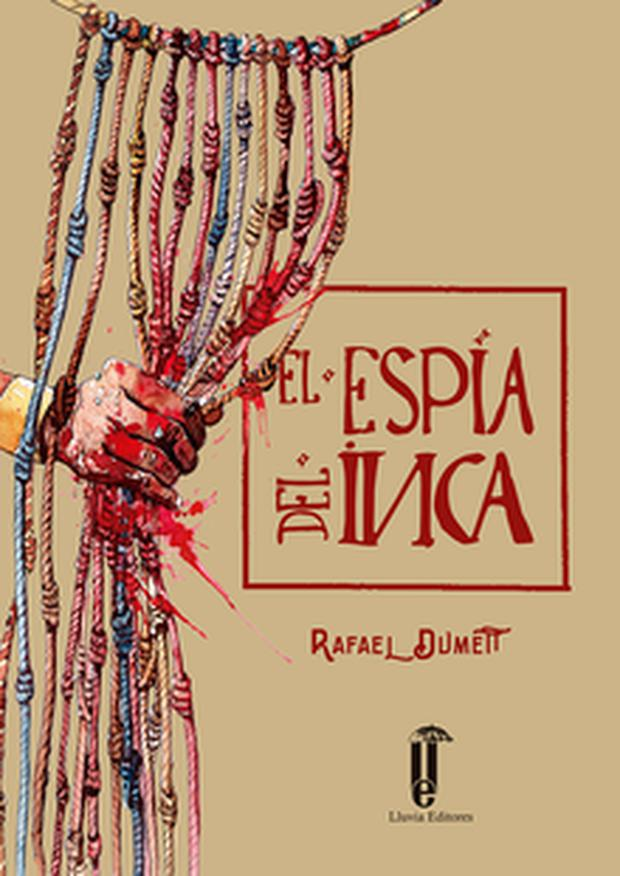

El espía del Inca es una novela de espionaje, novela histórica para muchos, sobre uno de los episodios más dramáticos de la conquista del Perú en el siglo XVI. Minuciosamente documentada, mantiene al lector pendiente de una acción trepidante, El relato está estructurado como la lectura de un quipú, el sistema de cuerdas y nudos considerado la escritura de los Incas. Si bien el núcleo de la novela mantiene el suspenso en todo momento, la variedad de personajes –la mayoría reales- y la descripción de la vida y la sociedad inca despliegan un universo rico y deslumbrante pocas veces llevado a la ficción.
Esta historia empieza con un individuo llamado Yunpacha, que recibe la visita de un chasqui y le entrega un quipu que el debe descifrar, el cual le ordena matar al mensajero del quipu y enrumbarse inmediatamente a ponerse a ordenes de el general Cusi Yupanqui, esto porque el sapa inca ha sido apresado y traicionado por su hermano Rumi Ñahui, procede a asesinar al mensajero y liberar a sus llamas, entre ellas a la madre reciente sobre la cual basa el principio de la historia.